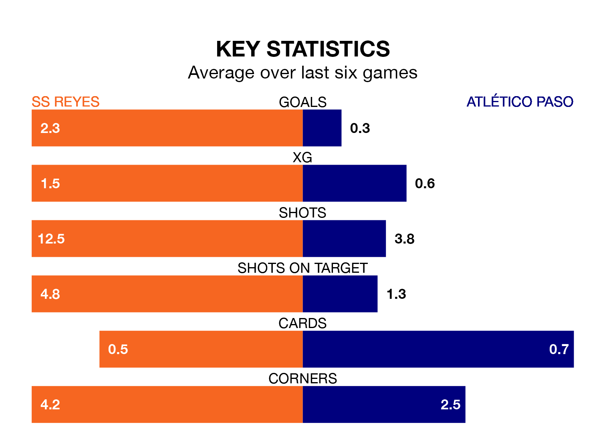

Two of the Segunda División RFEF Group 5's meanest defences go head-to-head on Sunday, when Atlético Paso visit SS Reyes.
No teams have conceded fewer goals than Atlético Paso to date: the away side have let in just 11 goals in 25 games.
SS Reyes have conceded 18 goals in 25 games, giving them the third tightest back line so far this season.
Key to Atlético Paso's home form has been Eduardo Loscos Ramos, who has allowed 0.45 goals past him per 90 minutes, compared to 0.64 for Jagoba Zárraga Martínez in the opposite net.
SS Reyes are top of the table after 25 games, of which they have won 11 and drawn 10, earning 43 points.
Atlético Paso are four places behind the hosts in fifth, with 10 wins and 10 draws putting them on 40 points.
SS Reyes are in reasonable form in the Segunda División RFEF Group 5, with three wins and two draws from their last six games.
With a win and three draws over that period, the away side's form is worse – they have taken six points from 18, compared to SS Reyes's 11.
SS Reyes's last match was on Sunday, a 2-2 draw against Llerenense, with Andreu Arasa Fort and Guillermo Perero Manso getting the goals for SS Reyes.
Atlético Paso beat CD Mensajero 1-0 last time out, also on Sunday, with Juan Carlos Menudo Domínguez on the scoresheet.
Updated: 09:34 (UTC), 08/03/24